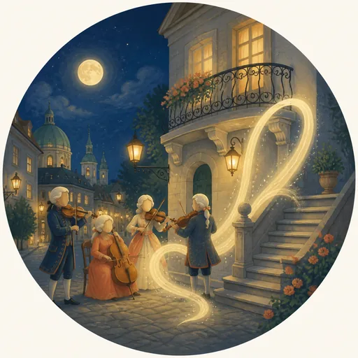
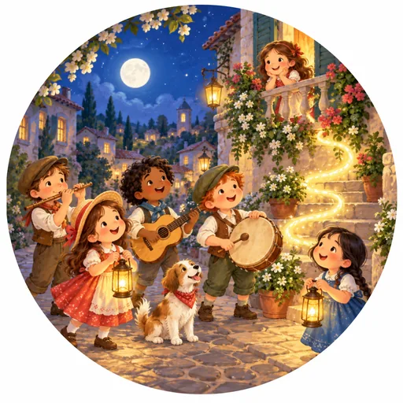

Room 14 was painted once at the start of September and again on 13 September. Batch 1 was
sent back with one note: it read as historical plates rather than as Music Book
art.
The brief for the redo was not to take the historical people out. It was to
make the figures feel like Music Book characters, in the style the rest of the book now uses.
Where Room 14 stands today
Six batch 1 pictures are already on the app — the room plate and
five of the seven song bubbles. A child opening Room 14 right now sees batch 1.
Two bubbles were held back — Eine kleine Nachtmusik and the
Surprise Symphony. They still carry art: null, so those two bubbles
are blank in the app. They are the two where the period figures are most unmistakable.
The redo is not wired anywhere. All eight redone pictures exist only
as files, waiting on this decision.
So this is not a question of switching Room 14 on for the first time.
Choosing the redo replaces six pictures a child can already see, and fills the two blank
bubbles. Choosing batch 1 leaves those six alone and gives the two blank bubbles their
batch 1 art after all.
Every pair below is the same piece at the same pixel size and the same WebP encode — bubbles
512×512, the plate 1448×1086 — so neither side is flattered by a better conversion.
Bubbles are shown as circles because that is exactly how the app draws them, so the square
corners hidden here are corners no child ever sees either.
The room plate
Live in the app
The painting behind the whole room screen, with the bubbles laid over it.
Batch 1 1 September · on the app nowRedo 13 September · not wired
Eine kleine Nachtmusik — first movement
Held back · blank in the app
One of the two that prompted the redo: batch 1 is four adults in wigs and
period costume.
Batch 1 1 September · withheld

Redo 13 September · not wired

Surprise Symphony No. 94 — second movement
Held back · blank in the app
The other withheld bubble, held back for the same reason.